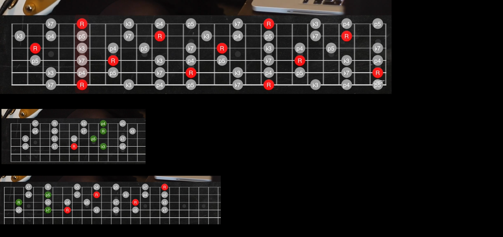

Primeros Acordes (acordes básicos)
Primeros Acordes (acordes básicos)
Variantes de ciertos acordes. MI7, SI7 menor. FA Y SOL 7 MAYOR
Variantes de ciertos acordes
Acordes sus2 y sus4
Acordes sus2 y sus4
Acordes disminuidos

Acordes disminuidos
Acordes Aumentados

Acordes Aumentados
Acordes de Quinta o Power Chords

Acordes de Quinta o Power Chords
Acordes Pentatónicos

Acordes Pentatónicos
Todos los acordes
Todos los acordes
Entendiendo la estructura de 11 acordes básicos
Enlace: Ver en YouTube